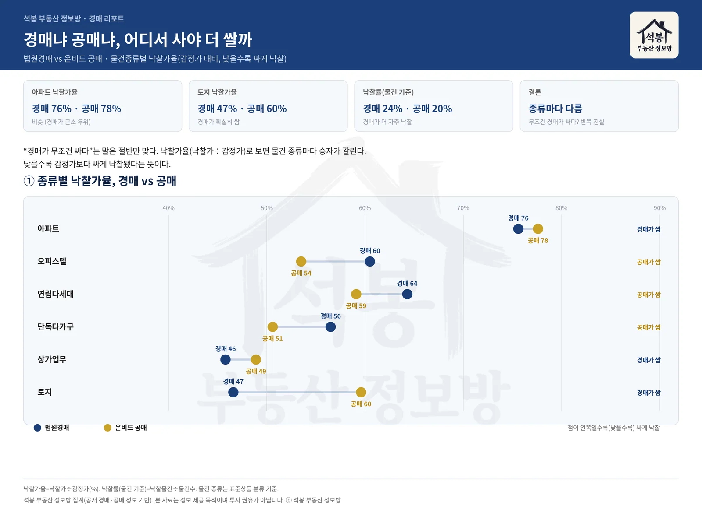
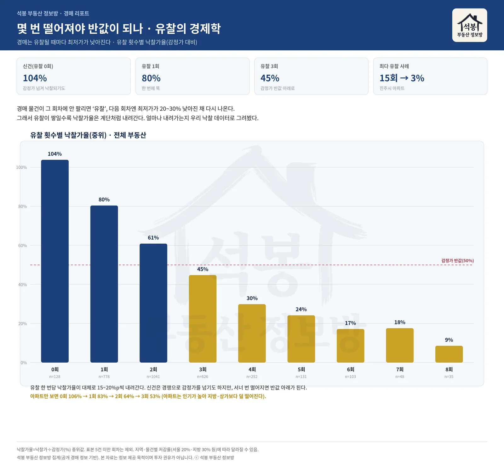

"경매로 사면 싸다"는 말은 부동산 투자에서 오래된 상식입니다. 그런데 막상 시작하려면 질문이 꼬리를 뭅니다. 법원경매와 공매 중 어디가 더 쌀까, 유찰된 물건은 얼마나 싸지고 어디까지 노려도 될까. 감이나 소문 대신, 우리가 직접 모아온 법원경매 낙찰 데이터와 온비드 공매 데이터로 이 질문들을 하나씩 따져봤습니다. 결론부터 말하면, "무조건 싸다"도 "많이 유찰될수록 좋다"도 모두 절반만 맞는 이야기였습니다.
먼저, 경매와 공매는 뿌리가 다르다
둘 다 감정가보다 싸게 살 기회지만 출발점이 다릅니다. 법원경매는 돈을 못 갚은 채무자의 부동산을 채권자(주로 은행 근저당)가 법원을 통해 강제로 파는 절차입니다. 입찰은 정해진 기일에 법원에 직접 가서 하고, 낙찰 뒤에는 그 집에 살던 사람을 내보내는 명도 문제가 따라붙습니다. 반면 공매는 세금을 체납했거나 공공기관이 보유한 재산을 온비드(한국자산관리공사가 운영하는 전자자산처분 시스템)에서 온라인으로 처분하는 방식입니다. 안방에서 입찰이 가능하고 물건 수도 훨씬 많지만, 국공유지 매각처럼 성격이 다른 물건이 섞여 있습니다.
이 구조 차이가 뒤에 나올 낙찰가율 차이의 배경이 됩니다. 그래서 "경매가 싸냐 공매가 싸냐"는 한마디로 답할 수 없고, 물건 종류별로 따로 봐야 합니다.
여기서부터는 회원에게 보여드립니다
카카오 로그인 3초면 전문을 읽을 수 있습니다. 무료입니다.
가입하시면 지역 시장조사 보고서(약식)를 2회 무료로 요청하실 수 있습니다.
이미 회원이면 같은 버튼으로 로그인만 됩니다
경매냐 공매냐, 답은 "물건 종류에 따라 다르다"

비교의 잣대는 낙찰가율, 낙찰가를 감정가로 나눈 값입니다. 이 숫자가 낮을수록 감정가보다 싸게 낙찰됐다는 뜻이니, 사는 사람에겐 낮을수록 좋습니다. 이 기준으로 법원경매와 온비드 공매를 물건 종류별로 나란히 놓아봤더니 승자가 갈렸습니다.
아파트는 경매 75.6% vs 공매 77.6%로 거의 붙어 있었습니다. 아파트는 시세가 투명하고 수요가 두터워, 어느 시장에서든 감정가의 4분의 3 언저리에서 손바뀜한다는 뜻입니다. 격차가 크게 벌어진 건 토지였습니다. 경매 46.6% vs 공매 59.6%로 경매가 무려 13%포인트 쌌습니다. 경매로 나오는 토지는 맹지나 지분·자투리처럼 처분이 까다로운 물건이 많아 여러 번 유찰되며 값이 빠지는 반면, 공매 토지는 국공유지 매각처럼 상태가 정리된 물건 비중이 높아 감정가에 근접해 팔립니다. 상가·업무용도 같은 이유로 경매(45.8%)가 공매(48.9%)보다 저렴했습니다.
반대로 오피스텔(경매 60.5% vs 공매 53.5%)과 연립·다세대(경매 64.3% vs 공매 59.1%)는 공매가 더 쌌습니다. 세금 체납으로 공매에 나오는 소형 주거는 인기가 낮아 저가에 처분되는 경향이 있어서입니다. 결국 아파트·토지·상가를 노린다면 법원경매, 오피스텔·연립을 노린다면 온비드 공매를 먼저 뒤지는 편이 확률이 높습니다.
낙찰가율(낮을수록 싸게 낙찰) · 어디가 더 싼가
🔹 법원경매가 싼 것: 토지 · 상가업무 · 단독다가구 · 아파트
🔸 온비드 공매가 싼 것: 오피스텔 · 연립다세대
낙찰 확률까지 보면 그림이 더 선명해집니다. 물건 기준 낙찰률은 경매가 24%, 공매가 20%였습니다. 경매 물건이 더 자주 주인을 찾는다는 뜻인데, 뒤집어 보면 공매는 그만큼 미매각 물건이 쌓여 다음 회차를 노릴 여지가 크다는 신호이기도 합니다.
유찰의 경제학: 한 번 떨어질 때마다 뚝뚝

경매의 진짜 무기는 유찰입니다. 어떤 물건이 그 회차에 아무도 입찰하지 않으면 유찰되고, 다음 회차에는 최저입찰가가 한 단계 낮아진 채 다시 나옵니다. 이 저감률이 서울은 보통 20%, 지방은 30% 수준입니다. 그러니 유찰이 쌓일수록 실제 낙찰가는 계단처럼 내려갑니다. 우리 낙찰 데이터로 그 계단을 실제로 그려봤습니다.
신건(유찰 0회)의 낙찰가율 중위는 104%였습니다. 인기 물건은 경쟁이 붙어 감정가를 넘겨서라도 사간다는 뜻입니다. 그런데 한 번 유찰되면 80%, 두 번이면 61%, 세 번이면 45%로 감정가 반값선 아래로 내려갑니다. 네 번이면 30%, 여덟 번까지 가면 9%입니다. 유찰 한 번당 대략 15~20%포인트씩 값이 깎이는 셈입니다.
유찰 횟수
낙찰가율(중위)
읽는 법
0회 (신건)
104%
경쟁으로 감정가 초과
1회
80%
한 번에 뚝
2회
61%
감정가 대비 4할 할인
3회
45%
감정가 반값 아래로
4회
30%
권리·하자 점검 필수 구간
8회
9%
사연 있는 물건일 확률 큼
다만 계단의 기울기는 물건마다 다릅니다. 수요가 두터운 아파트는 완만합니다. 0회 106% → 1회 83% → 2회 65% → 3회 53%로, 지방 토지나 상가처럼 급하게 반값 밑으로 빠지지 않습니다. 실제로 우리 데이터에서 아파트 낙찰 가운데 감정가 절반 이하로 떨어진 건 9%뿐이었습니다. 아파트 경매는 "반값"을 기대하기보다, 급매 시세보다 조금 더 싸게 잡는 게임에 가깝다는 이야기입니다.
반대로 여러 번 유찰된 물건이 싸다고 덥석 잡는 건 위험합니다. 유찰이 반복됐다는 건 시장이 그 물건을 외면할 이유가 있었다는 뜻입니다. 세입자를 내보내기 어려운 점유 문제, 낙찰 뒤에도 인수해야 하는 권리(선순위 임차인·유치권 등), 맹지 같은 입지 하자가 대표적입니다. 계단 아래로 갈수록 값은 싸지지만, 그만큼 "왜 이 가격까지 왔나"를 파고들어야 합니다.
실전: 경매·공매, 이렇게 접근하세요
데이터가 알려주는 방향을 실제 입찰로 옮기려면 세 가지를 챙겨야 합니다.
1. 감정가가 아니라 '실거래가'로 판단하라
감정가는 감정 시점의 값이라, 시장이 오르내리면 실제 시세와 벌어집니다. 낙찰가율 75%가 싼지 비싼지는 감정가가 아니라 지금 그 동네 실거래가와 비교해야 압니다. 감정가가 시세보다 높게 잡힌 물건은 낙찰가율이 낮아도 실속이 없고, 반대로 감정 이후 값이 오른 물건은 낙찰가율이 높아도 남는 장사일 수 있습니다. 우리 실거래지도로 주변 시세를 먼저 확인하고 들어가시길 권합니다.
2. 권리분석과 명도가 진짜 비용이다
낙찰가만 싸다고 끝이 아닙니다. 말소되지 않고 낙찰자가 떠안는 권리(선순위 임차보증금, 유치권 등)가 있으면 그만큼 추가 비용입니다. 등기부와 매각물건명세서로 말소기준권리를 확인하고, 인수할 권리가 있는지 반드시 따져야 합니다. 명도(점유자를 내보내는 일)도 협의가 안 되면 인도명령·강제집행까지 시간과 비용이 듭니다. 이 두 가지를 빼고 "싸게 샀다"고 계산하면 오산입니다.
3. 자금 계획은 낙찰 전에 세워라
경매는 낙찰 후 대체로 6주 안팎에 잔금을 내야 합니다. 경락잔금대출 한도(보통 낙찰가 기준, 방 개수만큼 빼는 방공제 유의)와 자기자본을 미리 계산해 두지 않으면, 어렵게 낙찰받고도 보증금을 날릴 수 있습니다.
낙찰가율은 낙찰가를 감정가로 나눈 값의 중위값이며, 표본이 5건 미만인 회차는 제외했습니다. 지역·물건에 따라 회차별 저감률(서울 20%·지방 30% 등)이 달라 계단의 폭도 달라질 수 있습니다. 여러 번 유찰된 물건은 권리관계·점유·물건 상태를 반드시 직접 확인하시고, 개별 물건의 수익성은 별도 검토가 필요합니다.
공개 경매·공매 정보 기반, 석봉 부동산 정보방 집계 · 기준일 2026년 7월 27일 · 편집·제작: 석봉 부동산 정보방 · 본 자료는 정보 제공 목적이며 투자 권유가 아닙니다.